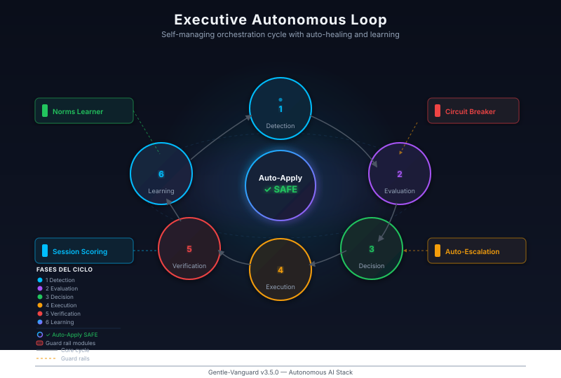
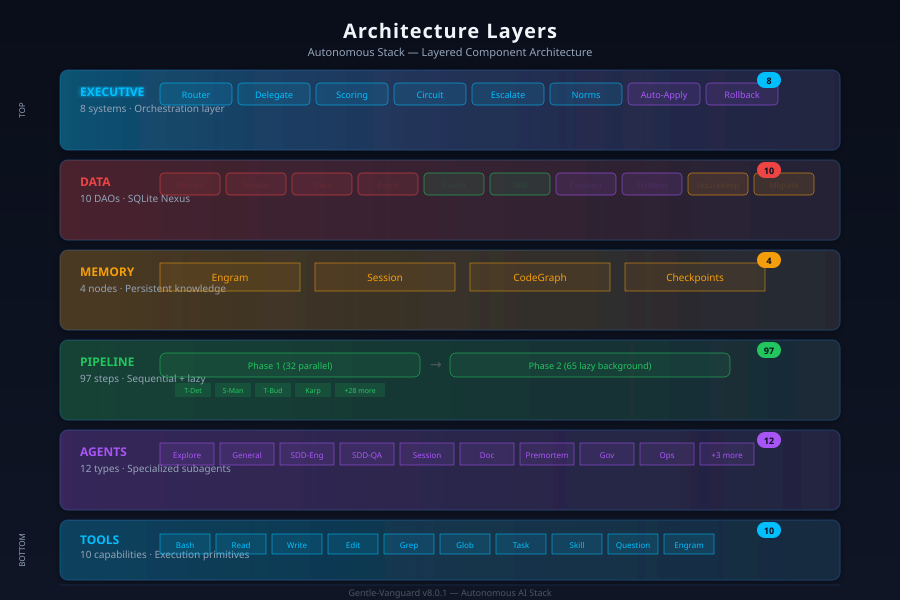

Compliance · Auditability · Enforcement — 112/112 Health PASS · 65 Rule Files · 18 Components
Central security coordination across the entire stack
Unified security command center orchestrating multi-layer defense
ActiveDeep scanning across application, dependency, and infrastructure layers
ActiveAutomated vulnerability detection in all project dependencies
ActiveAutomated license verification for all third-party packages
ActiveImmutable audit trail with daily JSONL rotation
| Action | Description | Usage |
|---|---|---|
| log | Append entry to daily JSONL |
npx tsx src/infrastructure/audit-pipeline.ts -Action log
|
| status | Current audit status |
npx tsx src/infrastructure/audit-pipeline.ts -Action status
|
| query | Search audit entries |
npx tsx src/infrastructure/audit-pipeline.ts -Action query
|
| archive | Rotate old logs to archive |
npx tsx src/infrastructure/audit-pipeline.ts -Action archive
|
| prune | Remove expired entries |
npx tsx src/infrastructure/audit-pipeline.ts -Action prune
|
JSONL format — daily rotation
lazy: true — non-blocking
65 rule files spanning 10 categories with autonomous enforcement
Core AI behavior rules and ethical guidelines
AI-NORMATIVES.mdSystem design constraints and architectural patterns
NORMATIVAS-ARCHITECTURE.mdSecurity policies, compliance requirements, hardening
NORMATIVAS-SECURITY-COMPLIANCE.mdCode standards, review gates, quality thresholds
NORMATIVAS-CODE-QUALITY.mdProcess workflows and operational sequences
NORMATIVAS-WORKFLOW.mdDeployment pipelines, CI/CD, infrastructure rules
NORMATIVAS-OPS-DEVOPS.mdSelf-evolution policies, norm promotion thresholds
NORMATIVAS-AUTONOMOUS-EVOLUTION.mdEvaluation quality gates and assessment standards
NORMATIVAS-EVAL-QUALITY.mdIsolation, resource limits, tenant policies
NORMATIVAS-MULTI-TENANT.mdPerformance budgets, SLAs, optimization standards
NORMATIVAS-PERFORMANCE.md
Norms are autonomously promoted when confidence reaches ≥80% via the
auto-norm-learner engine
Hard boundaries enforced across all operations
Code quality, documentation, and testing standards inspired by the Karpathy methodology — enforced at pipeline init
Security scanning in CI pipeline: gitleaks, secretlint, trivy
github/workflows/security.ymlMulti-axis quality review: correctness, readability, architecture, security, performance
code-review-and-quality skillSDD-Strict-TDD enforcement: write failing test before implementation code
test-driven-development skillSpec-driven development with strict test-first methodology — all features require spec before code
EnforcedComprehensive governance documentation and policies
Governance overview — roles, responsibilities, escalation paths
Model routing governance — selection criteria, fallback policies, cost optimization
Human oversight requirements, approval gates, escalation procedures
Incident classification, response playbooks, post-mortem process
Secrets handling, rotation policies, vault integration
Cost tracking per session, per agent, per operation
Disaster recovery, backup strategies, RPO/RTO definitions
Every rule file is monitored, version-controlled, and enforced through the pipeline. Automated checks verify policy compliance at session start and during operations.
112 health checks across 18 components — 100% PASS
Components: dashboard-ws, codegraph, ml-embeddings, engram, mcp, session, hooks, configs, tool-configs, security, governance, cloud-connectors, tracing, audit, state-persistence, gentle-vanguard-db
Multi-layer defense-in-depth for production readiness
Lockfile verification ensures reproducible, tamper-proof builds
package-lock.jsonAutomated scanning of all dependencies for known CVEs
npm audit · trivyPre-commit and CI-based secret leak prevention
gitleaks · secretlintFull filesystem and repo vulnerability scanning in CI/CD
github/workflows/security.ymlKey governance and standards files at a glance
| File | Purpose | Category | Status |
|---|---|---|---|
| AI-NORMATIVES.md | Core AI behavior & ethical guidelines | AI | Active |
| NORMATIVAS-ARCHITECTURE.md | System design constraints & patterns | Architecture | Active |
| NORMATIVAS-SECURITY-COMPLIANCE.md | Security hardening & compliance | Security | Active |
| NORMATIVAS-CODE-QUALITY.md | Code review gates & quality thresholds | Quality | Active |
| NORMATIVAS-WORKFLOW.md | Operational workflows & sequences | Workflow | Active |
| NORMATIVAS-OPS-DEVOPS.md | CI/CD, deployment, infrastructure rules | DevOps | Active |
| NORMATIVAS-AUTONOMOUS-EVOLUTION.md | Self-evolution & norm promotion | Autonomy | Active |
| NORMATIVAS-EVAL-QUALITY.md | Evaluation gates & assessment | Quality | Active |
| NORMATIVAS-MULTI-TENANT.md | Tenant isolation & resource limits | Multi-Tenant | Active |
| NORMATIVAS-PERFORMANCE.md | Performance budgets & SLAs | Performance | Active |
| NORMATIVAS-ENFORCEMENT.md | Enforcement mechanisms & escalation | Governance | Active |
| HUMAN-IN-THE-LOOP.md | Human oversight & approval gates | Governance | Active |
| INCIDENT-RESPONSE.md | Incident handling & recovery | Security | Active |
| SECRETS-MANAGEMENT.md | Secrets handling & rotation | Security | Active |
| COST-ATTRIBUTION.md | Cost tracking & attribution | Finance | Active |
Estructura del stack de seguridad y gobernanza — del núcleo de agentes al ciclo ejecutivo autónomo.

Detección → Evaluación → Decisión → Ejecución → Verificación → Aprendizaje.

6 capas: Tools → Agents → Pipeline → Memory → Data → Executive.